Vocal Samples
Where The Streets Have No Name
End of Beginning
The Great Divide
Flower Shops
Vocal Reel
Self Tape Reel
Movement Reel
Reviews
““He just jumped out at the auditions,” said the tour’s co-producer Tanya Kateri. “We count our lucky stars because he brings something so special to this role. I can’t tell you how many ‘we’re so lucky’ texts have been flying between the producers.””
— Bill DeYoung, St. Pete Catalyst
“I wouldn’t be telling the truth if I didn’t say that Gabriel White Marin as Hill’s buddy and fellow con man Marcellus Washburn was this show’s scene stealer. He got laughs- calling Hill by his real first name (“Greg”) throughout- and he brought to mind the young Dick Van Dyke in “Mary Poppins” with his expressive face and high-flying, elastic-legged dancing.”
— Gary Nager, New Tampa & Wesley Chapel Neighborhood News
“[Gabriel White Marin's] “Shipoopi” is one of the night’s best numbers... It was the most rousing song of the night, featuring a wonderful and energetic ensemble, and it certainly was the audience’s favorite.”
— Peter Nager, BroadwayWorld Tampa
“Best in Company goes to... Gabriel White Marin, for his exceptional portrayal of Cinderella’s Prince. Delivering a top-notch performance, he is truly in the moment from first entrance to final bow, never forced, always believable, and grounded in every part of his journey. Too many times the Princes can come across forced, almost too caricature, but in Gabriel’s hands, Cinderella’s Prince is the most honest, and most real, a true standout, and I for one will be watching where he goes next.”
— Drew Eberhard, BroadwayWorld Tampa
Gallery
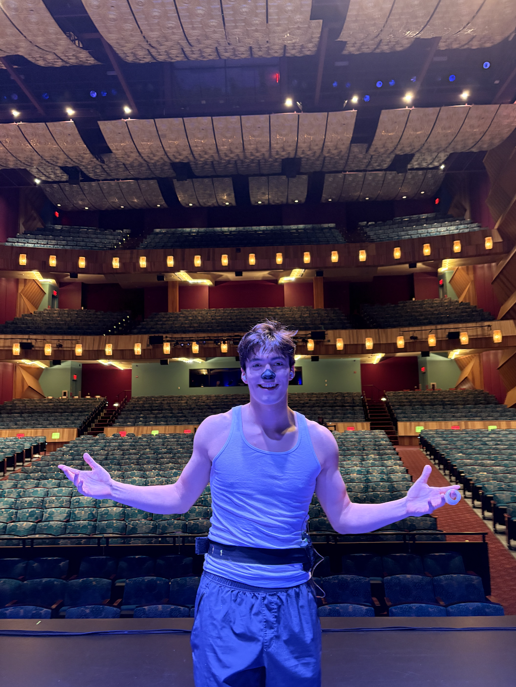
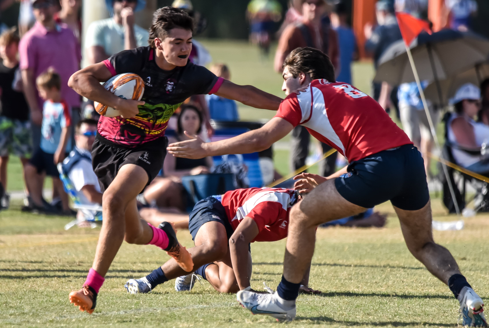
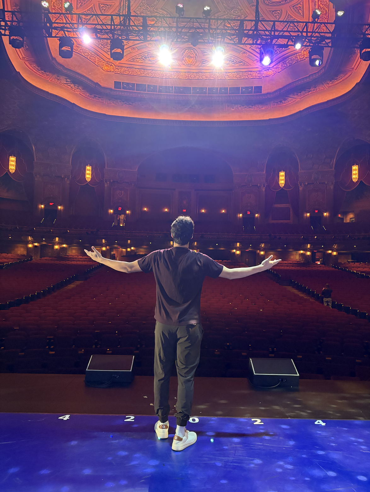
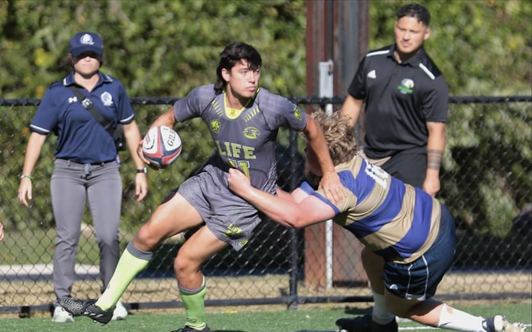
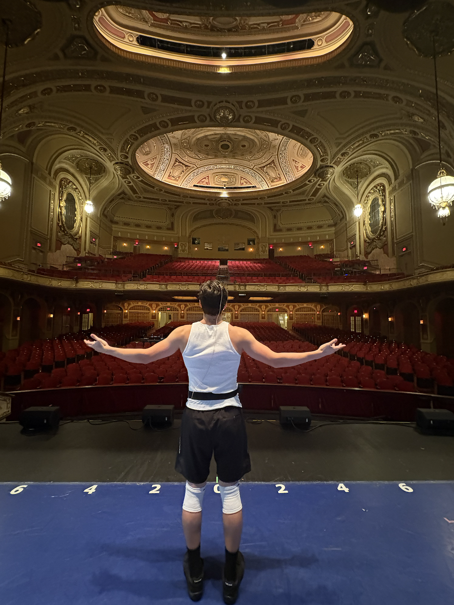
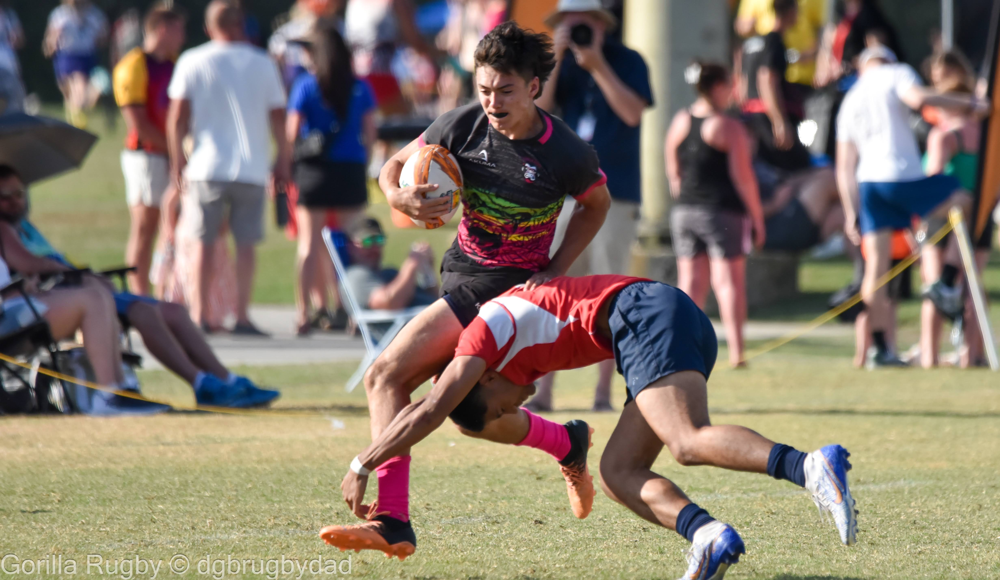
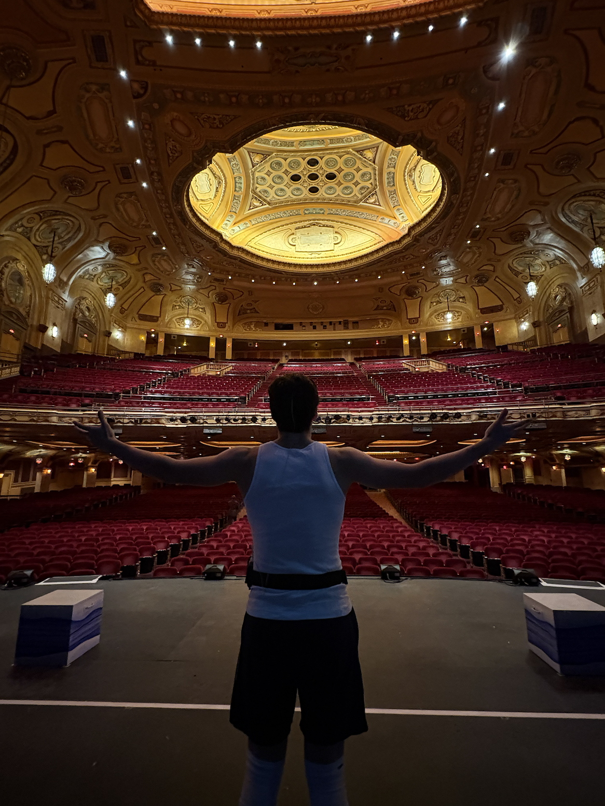
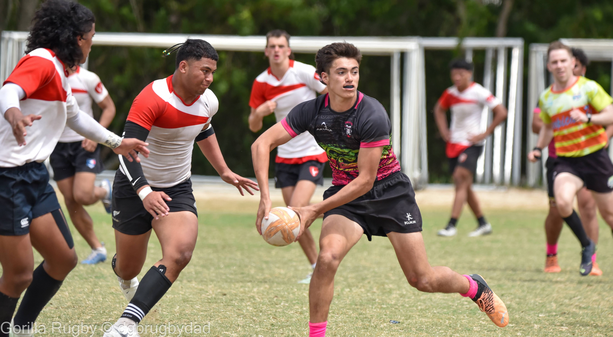
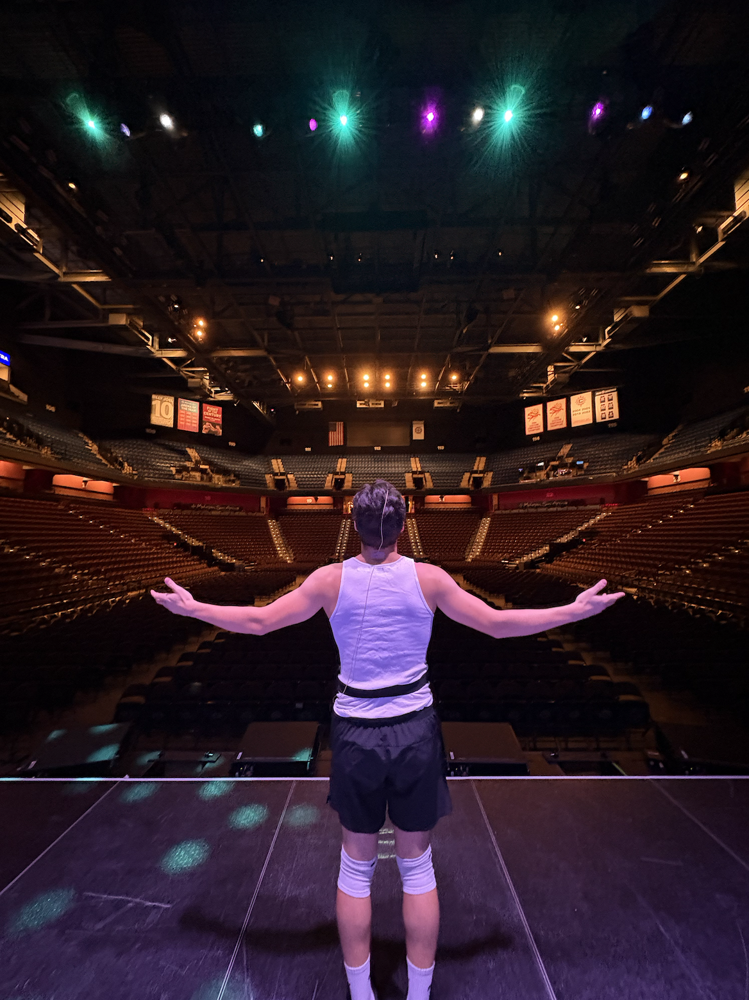
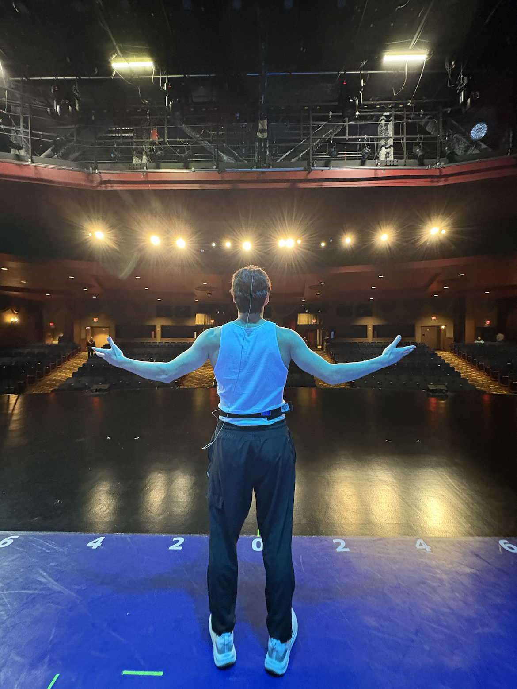

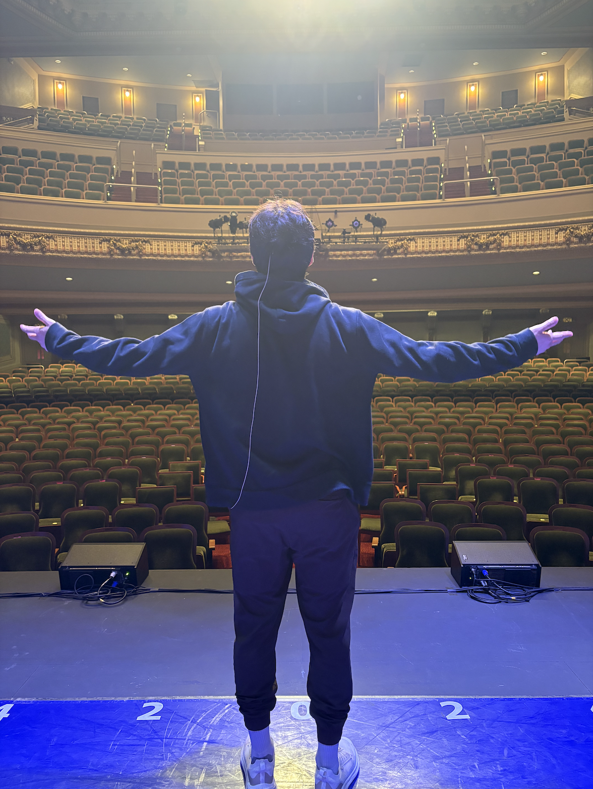

Contact
gabedwardw@gmail.com • 469-338-3251